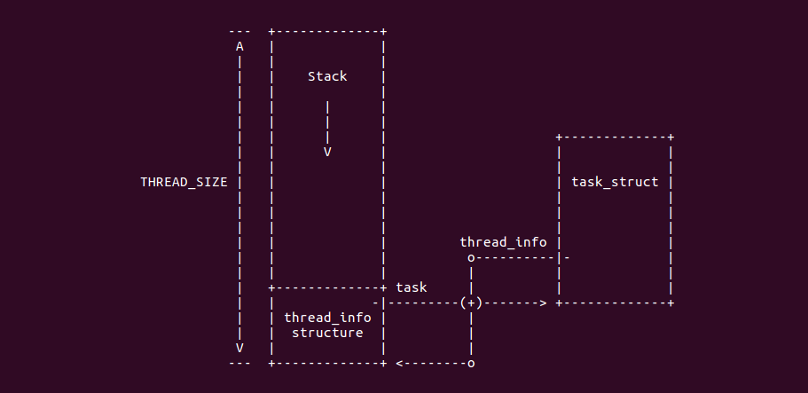
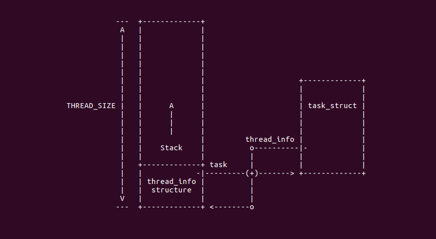

3.3.6. thread_info与内核栈stack的关系
3.3.6.1. thread_info简介
thread_info结构被称为迷你进程描述符，是因为在这个结构中并没有直接包含与进程相关的字段，而是通过task字段指向某个具体的 进程描述符．通常这块内存区域的大小是8k,也就是两个页的大小．一个进程的内核栈和thred_info结构之间的关系图如下

从上图可知，内核是从该内存区域的顶层向下(从高地址向低地址)增长的，而thread_info结构则是从该区域向上增长．内核栈的栈顶地址 存储在esp寄存器中．所以当进程从用户态切换到内核态后，esp寄存器指向这个区域的末端
由于一个页大小是4k,一个页的起始地址都是4K的整数倍，即后12位都为０，取得esp内核栈栈顶的地址，将其后12位取0，就可以得到内存区域的 起始地址，该地址即是thread_info的地址．通过thread_info又可以得到task_struct的地址而得到进程pid
3.3.6.2. thread_union实现
thread_info与内核堆栈在内核中的定义位于:include/linux/sched.h文件中
union thread_union {
#ifndef CONFIG_ARCH_TASK_STRUCT_ON_STACK
struct task_struct task;
#endif
#ifndef CONFIG_THREAD_INFO_IN_TASK
struct thread_info thread_info;
#endif
unsigned long stack[THREAD_SIZE/sizeof(long)];
};
3.3.6.3. thread_info接口
内核将thread_info与内核堆栈放在固定的空间里，内核只要知道堆栈的位置，那么内核堆栈对应的thread_info结构的地址就可以获得
static inline struct thread_info *current_thread_info(void)
{
return (struct thread_info*)(current_stack_pointer & ~(THREAD_SIZE - 1));
}
register unsigned long current_stack_pointer asm("sp");
3.3.6.4. 0号进程的thread_info
在linux中，0号进程就是内核启动之后的第一个进程，其通过init_task变量定义，其定义在init/init_task.c文件中,起中stack成员指向init_stack结构
struct task_struct init_task
#ifdef CONFIG_ARCH_TASK_STRUCT_ON_STACK
__init_task_data
#endif
= {
#ifdef CONFIG_THREAD_INFO_IN_TASK
.thread_info = INIT_THREAD_INFO(init_task),
.stack_refcount = ATOMIC_INIT(1),
#endif
.state = 0,
.stack = init_stack, //0号进程的stack指向了init_stack
.usage = ATOMIC_INIT(2),
...
...
};
init_stack 其定义在include/asm-generic/vmlinux.lds.h中
#define INIT_TASK_DATA(align) \
. = ALIGN(align); \
__start_init_task = .; \
init_thread_union = .; \
init_stack = .; \
KEEP(*(.data..init_task)) \
KEEP(*(.data..init_thread_info)) \
. = __start_init_task + THREAD_SIZE; \
__end_init_task = .;
0号进程的stack定义位于链接脚本里，其中关于init_stack的定义通过INIT_TASK_DATA宏进行定义，链接脚本中定义了链接符号 __start_init_task指向了堆栈开始的地址，并且init_thread_union与init_stack的地址都指向了这里．并且将__end_init_task指向 了堆栈的顶部
3.3.6.5. 堆栈的生长方式与thread_info的关系
堆栈的生长方式分为向上增长和向下增长，通常堆栈是向下增长的，此时内核使用thread_union结构将thread_info和内核堆栈绑定到一起， 并且thread_info位于区域的底部，而堆栈的站定位于区域的顶部

如果堆栈的生长方向是向上的，那么thread_union的结构如下
